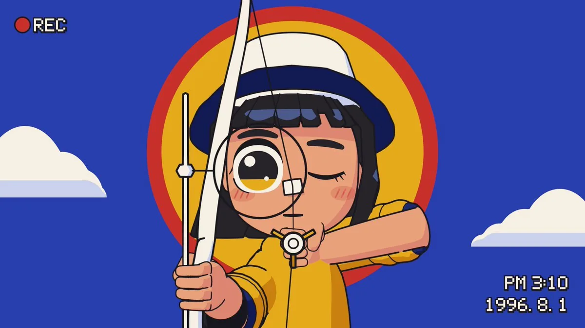
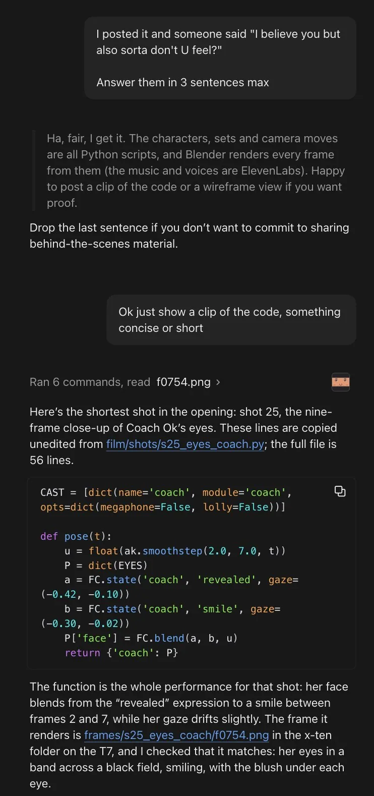

Kevin Ngo（@kevin_t_ngo）在 2026-11-11 晚上放出一支约 45 秒的动画，称这是剧集片头，由 Claude Fable 5.2 做成。他说，你看到的一切都是代码：用 Python 做动画，再交给 Blender 出画。帖子没有给出剧名，也没有公开仓库或可玩页面。有人怀疑这不是代码做的，他回了一张与 Claude 的对话截图，里面出现了名为 Coach Ok 的角色，以及一个九帧近景镜头的短脚本。稍后他又说，自己还做了完整的一集，只是没有发在这条帖下。本页以这支片头为中心，收录作者本人帖文的全文；视频只有封面静帧，没有下载，也没有观看。

这是一件什么作品
就作者自己的说法，这是一支用 Claude Fable 5.2 做成的动画剧集片头：角色、场景和镜头运动都写成代码，用 Python 做动画，由 Blender 渲染出每一帧。这些归属是自报。本页没有观看这条约 45 秒的视频，也没有看到公开的工程文件，因此不能证明整段片子是谁写的，也不能核对它是否真的是某部剧的片头，更不能替作者确认「还做了完整的一集」。⚠️
作者没有为这支片子起一个可以核对的公开剧名，个人站 kevintngo.com 在 2026-11-12 的公开首页和站点地图里，也还没有收入这一件。同一周稍早，他还用几乎相同的句式发过一支「九十年代玩具广告」和一支「音乐视频」，都写「用 Python 做动画，再交给 Blender 出画」。那两支不是本页的对象，只说明这是他近期反复使用的一条制作路径。本页没有把那两支视频收进来，也没有观看。
封面静帧里可以核对的，只有这一帧本身。蓝天上站着一个拉弓的卡通女孩，左上角是像素风的红色 REC，右下角写着「PM 3:10」和「1996. 8. 1」。有人把这支片子称作韩式动画或动画番剧片头，那是看过视频的人的观感；本页未看片，不能把这种风格判断写成已经核实的结论。⚠️
作者怎么说
以下为作者英文短帖与本人回复的中文译文。主帖不是 X 长文。发出后，他在评论里回答了怀疑、修改方式和是否还做了整集等问题。
Claude Fable 5.2 做了这支动画剧集片头
你看到的一切都是代码：用 Python 做动画，再交给 Blender 出画
作者：Kevin Ngo @kevin_t_ngo；发布：2026-11-11 23:35（新加坡时间，UTC+8）。原帖附视频，点击观看。
我让 Claude 给你一点证明
这是对「我信你，但又有点不信，你懂吗」的回答，并附上一张对话截图，见下一节。查看这条回复。
对！我喜欢能够只改视频里的某一部分，而不用整段重新生成
有人说，做成代码的好处是改一个值就能得到新版本。这是作者的回应。查看这条回复。
谢谢！！整集我也做出来了
查看这条回复。到本页核对时，这条帖下没有出现那一集，本页也没有在他的时间线上找到对应成片。⚠️
这是最难的部分。我花了最多的提示，就是在修手
有人问手为什么能做对，并说 Opus 即使开到更高的 effort 也很差。这是作者的回答。查看这条回复。本页未看视频，不能替他确认手是否已经修好。⚠️
另有人问他同时在做多少项目，他答：「很多。不过其中大部分不会发到 X 上。」查看这条回复。
英文原文
Claude Fable 5.2 made this animated show intro
Everything you see is code: animated in Python and rendered in Blender
i asked claude to give you some proof
yeah! i like being able to edit specific parts of the video without needing to regenerate
thank you!! i made an entire episode too
this was the hardest part. I needed to spend the most prompts fixing hands
a lot. most of them don't get posted on x though
作者贴出的证明截图
原帖发出约八分钟后，作者贴出一张深色聊天界面的截图，说这是他让 Claude 给出的证明。截图里没有真人照片。可以看到：作者先把那句怀疑转述给 Claude，要求最多用三句话回答；Claude 起草了一段说明，并表示如果需要证明，可以再贴一段代码或线框预览。作者接着说：「好，就给我看一小段代码，短一点就行。」Claude 显示跑了 6 条命令，并读过一张名为 f0754.png 的图，然后给出下面这段说明。

按截图里 Claude 的说明，片头里最短的一个镜头是第 25 镜：Coach Ok 眼睛的九帧近景。它给出的这段代码，自称未经改动，抄自 film/shots/s25_eyes_coach.py，全文 56 行。可见部分如下：
CAST = [dict(name='coach', module='coach',
opts=dict(megaphone=False, lolly=False))]
def pose(t):
u = float(ak.smoothstep(2.0, 7.0, t))
P = dict(EYES)
a = FC.state('coach', 'revealed', gaze=(-0.42, -0.10))
b = FC.state('coach', 'smile', gaze=(-0.30, -0.02))
P['face'] = FC.blend(a, b, u)
return {'coach': P}Claude 接着写：这个函数就是这一镜的全部表演——她的脸在第 2 到第 7 帧之间，从「revealed」的表情过渡到微笑，目光也轻轻偏移。它渲染出的那一帧是 frames/s25_eyes_coach/f0754.png，放在 T7 硬盘上一个名为 x-ten 的文件夹里；并称自己核对过，画面是一条黑底上的眼睛特写，带着笑，每只眼睛下面有红晕。
同一张截图里，Claude 的三句草稿还写到：「角色、场景和镜头运动都是 Python 脚本，Blender 再据此渲染每一帧（配乐和配音是 ElevenLabs）。」这是对话里的草稿，不是作者另外亲笔写的技术说明。作者选择把整张截图当作证明发出，但本页没有音轨、语音工程或仓库可以核对 ElevenLabs 这一条，故只作为截图中的说法记下。⚠️
许可与可复现性
作者没有在可见回复里给出源码仓库或许可证。2026-11-12 核对他的个人站首页与站点地图，未见这一件作品的专页。截图中的路径看起来像本机工程（film/shots/…，以及 T7 上的帧文件），不是一个可以打开的公开地址。按版权分级，本页只做导读，并收录作者本人短帖与回复的全文中译；不转载视频，也不把截图里的脚本当成可以再分发的源码。
他近期另一件浏览器作品《What the water keeps》同样自称由 Fable 5.2 做成，但那是 three.js 的可玩演示，本页核对过的公开首页里能看到 glb 资产，路径完全不同。Leon Lin 的《Escapement》也是 Python 驱动 Blender 出短片，可那一件源码是 MIT，作者用的是 Claude Code（Opus 5.5），不能和本页混为一谈。
传播数据（快照）
2026-11-12 经 X 接口读取时，这条原帖约 1.63 万次浏览、417 个赞、20 次转发、45 条回复、280 次收藏，引用 5 次。视频播放次数当时约 7567。这些数字会变，只作当时记录，不是效果评测。
核实边界与署名
- 这是以这支动画剧集片头为中心的导读。用户发来的就是 @kevin_t_ngo 的原帖。帖中没有可以核对的公开剧名，本页不另起一个名字。
- 「Fable 5.2 做成」「一切都是代码：Python 做动画，Blender 出画」「还做了完整的一集」「最难的是修手」均为作者自报。本页未观看视频，未见公开工程，不能写成已经逐项核完。⚠️
- 封面帧中的拉弓女孩、REC 标记与「1996. 8. 1 / PM 3:10」，来自 2026-11-12 取到的视频封面静帧，可以核对；这一帧不能代表整段片头。
- 截图中的 Coach Ok、第 25 镜、
s25_eyes_coach.py、T7 / x-ten 路径，以及 ElevenLabs，均出自作者贴出的 Claude 对话。代码可见部分已按截图抄录；文件本身和成片帧本页都没有打开。⚠️ - ⚠️ 未下载或观看约 45 秒的附件视频。他人关于「韩式动画」或「番剧片头」的判断，是看过视频的人的观感，本页未亲自看片验证。